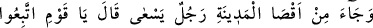
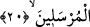
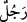

vurulacakken Ebü’l-Hüseyn Nûrî öne atıldı. Cellat, Ebü’l-Hüseyn’e: “Sen neye
atıldığını biliyor musun?” dedi. O da: “Evet” dedi. Cellat: “Neden acele ediyorsun?”
deyince Ebü’l-Hüseyn: “Arkadaşlarım bir saat fazla yaşasın diye onları kendime tercih
ederim.” dedi. Cellat hayret etti. Durumu halifeye bildirdi. Halife ve yanındakiler de bu
duruma şaştılar.
Halife kadıya onların hâlini araştırmasını emretti. Kadı “Sizden birisi gelsin onunla
konuşayım” dedi. Ebü’l-Hüseyn Nûrî kadının huzuruna çıktı. Kadı ona bazı fıkhî
meseleler sordu. Ebü’l-Hüseyn sağına baktı, soluna baktı, sonra bir müddet başını
önüne eğdi. Ardından sorulan tüm soruları cevapladı. Sonra şöyle demeye başladı:
“İmdi Allah’ın öyle kulları vardır ki kalktıkları zaman Allah ile kalkarlar. Konuştukları
zaman Allah ile konuşurlar.” Ebü’l-Hüseyn öyle mânidar bir konuşma yaptı ki kadıyı
ağlattı. Sonra kadı ona neden sağa sola baktığını sordu. Ebü’l-Hüseyin şöyle cevap
verdi: “Bana bazı meseleler sordun. Ben ise onların cevabını bilmiyordum. Bu
soruların cevaplarını sağımdaki meleğe sordum, “Bilmiyorum” dedi. Solumdaki meleğe
sordum o da “Bilmiyorum” dedi. Kalbime sordum, kalbim bana Rabbimden naklen
haber verdi. Ben de onları cevap olarak sana söyledim.” dedi. Kadı halîfeye: “Eğer
bunlar zındık iseler yeryüzünde hiç müslüman yok demektir.” diye haber gönderdi.
Halife onları çağırdı ve “Bir isteğiniz var mı?” diye sordu. Şöyle dediler: “İsteğimiz,
bizi unutmandır. Ne kabul ederek şereflendir, ne de reddederek uzaklaştır. Zira bizim
için senin reddetmen kabul etmen gibidir. Halife çok ağladı, onlara gereken saygıyı
gösterdi ve gönderdi. Halife ve kadının mîzâcında adalet ve insaf olduğundan, zorunlu
olarak hak tarafına meylettiler; gerçek sûfîler hakkında zulüm yolunu seçmediler.
Allah Teâlâ bizi ve sizi sahih bir delil ile ortaya çıktıktan sonra sarih/açık olan hakka
muhâlefet etmekten korusun.
20. Derken şehrin öbür ucundan bir adam koşarak geldi. “Ey kavmim! Bu elçilere
uyunuz!” dedi.
“Derken şehrin öbür ucundan” Antakya’nın en uzak yerinden “bir adam koşarak
geldi.”
“__WORD__ kelimesinde gelen şahsın yiğit ve celâdetli biri olduğuna işâret vardır. Bu
kelimenin nekre olarak getirilmesi, bu zâtın bilinmeyen birisi olduğu için değil, şanını
yüceltmek içindir. Elbette bu kişi Allah Teâlâ nezdinde mâlumdur. Bu zâtın evi şehrin en
uzak kapısının yanındaydı. Onun şehrin en uzak yerinden gelmesi, elçilerin açık bir
şekilde Allah’ın buyruklarını tebliğ ettiklerini açıklar. Öyle ki onların dâveti şehrin ta